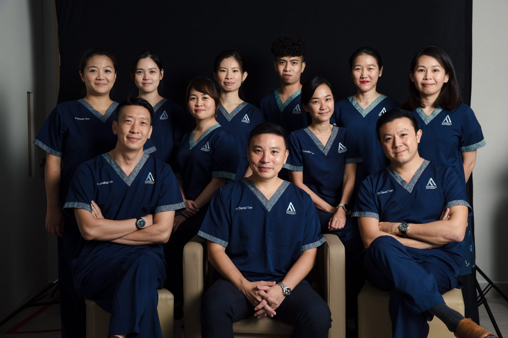

Dr Daniel Tan Yat Harn
Stereotactic Radiosurgery (SRS) and Stereotactic Body Radiotherapy (SBRT) for brain, spine, breast and prostate cancers. Co-founder of AARO. Board Director of the International Stereotactic Radiosurgery Society.
MBBS (Singapore) · FRCR (UK) · FAMS · MBA Healthcare Management · PBM

You may benefit most from consulting if you:
- Have been diagnosed with a brain tumour, spine tumour, or lung cancer and want to understand radiosurgery or SBRT as options
- Have a primary cancer that has spread (metastasised) to the brain or spine and are exploring treatment
- Are seeking a second opinion on whether radiation therapy is appropriate for your case
- Have been told that surgery carries high risk and want to understand non-surgical alternatives
- Are currently under oncological care and your team is considering adding radiation to your treatment plan
Two decades at the frontier of radiation oncology.
From co-chairing NCCS's Neuro-Oncology Service Line to building Southeast Asia's first SBRT programmes — Dr Tan has spent his career at the leading edge.

Role at AARO
Dr Daniel Tan is Director and Senior Consultant Radiation Oncologist at AARO, where he leads the centre's advanced-technology approach to cancer treatment.
Experience & expertise
With over 20 years of clinical experience, Dr Tan focuses on brain and spine tumours (benign and malignant), breast cancer and prostate cancer. His core expertise is SRS/SBRT — highly targeted radiation that ablates primary and metastatic tumours in just 1–5 sessions.
ISRS Board appointment
In June 2024, Dr Tan was elected to the Board of Directors of the International Stereotactic Radiosurgery Society (ISRS) — the world's largest radiosurgery professional body, representing oncologists from over 70 countries.
Modalities
Dual-trained in chemotherapy and radiotherapy, Dr Tan is fluent in every modern radiation technology — 3D conformal radiotherapy (3D-CRT), intensity-modulated radiotherapy (IMRT), image-guided radiotherapy (IGRT), volumetric modulated arc therapy (VMAT), stereotactic radiosurgery (SRS), stereotactic body radiotherapy (SBRT), accelerated partial-breast irradiation, and deep-inspiration breath-hold (DIBH) radiotherapy.
Approach to patients
Patients describe Dr Tan as kind, patient and unhurried. He takes the time to understand each person's situation — what matters to them, what they're afraid of, what trade-offs they're willing to make — and then combines that with current evidence to design a treatment plan tailored to their goals.
Education & NCCS years
An NUS graduate (2002), Dr Tan trained at the National Cancer Centre Singapore from 2003 to 2015, rising from Resident to Consultant before founding AARO. At NCCS, he co-chaired the Neuro-Oncology Cancer Service Line and led the development of Southeast Asia's first SRS/SBRT programmes for spine, prostate and liver cancers.
Awards & advanced training
Dr Tan has earned two Health Manpower Development Programme (HMDP) awards — for advanced clinical oncology training in the United Kingdom (2008) and for brachytherapy, SRS and SBRT training (2012). He holds an FRCR (UK, 2011) and FAMS (2012). His sub-specialty training included the Roberts Proton Therapy Center at the University of Pennsylvania, the Princess Margaret and Sunnybrook Health Sciences Centre in Toronto, and Tokyo Metropolitan Komagome Hospital — work that led him to establish Novalis Spine Radiosurgery at NCCS, a regional first.
MBA & founding AARO
Believing that good medicine starts with good management, Dr Tan also holds an MBA from NUS Business School. He founded AARO in 2015 to bring sub-specialised, internationally benchmarked radiation oncology into Singapore's private sector — and to make it accessible across the region.
International consulting
Dr Tan consults for cancer centres in China, Russia and Myanmar, and has worked with UPMC and MD Anderson to bring international standards into regional radiation oncology units, including training stints at both institutions.
Publications & leadership
Dr Tan publishes and presents at ASTRO, ASCO and ISRS on neuro-oncology and SBRT. He has held leadership roles at NCCS (Neuro-Oncology Service Line co-chair), the NUS Yong Loo Lin School of Medicine (clinical lecturer), the Singapore Radiological Society and the College of Radiology Singapore. He also served as country lead for the IAEA's Human Health Project 6065, training oncologists from 11 countries in SBRT.
Recent academic work
Stereotactic Body Radiotherapy for Spinal Metastases: a prospective phase II study from NCCS
Outcomes of Single-Fraction Radiosurgery for Brain Metastases: the Singapore Experience
Radiation for Prostate Cancer — when SBRT is the right choice [Keynote]
Re-irradiation of recurrent spine metastases: outcomes from a regional cohort
Book a consultation with Dr Daniel Tan.
WhatsApp our patient care team — same-working-day reply. No referral needed.